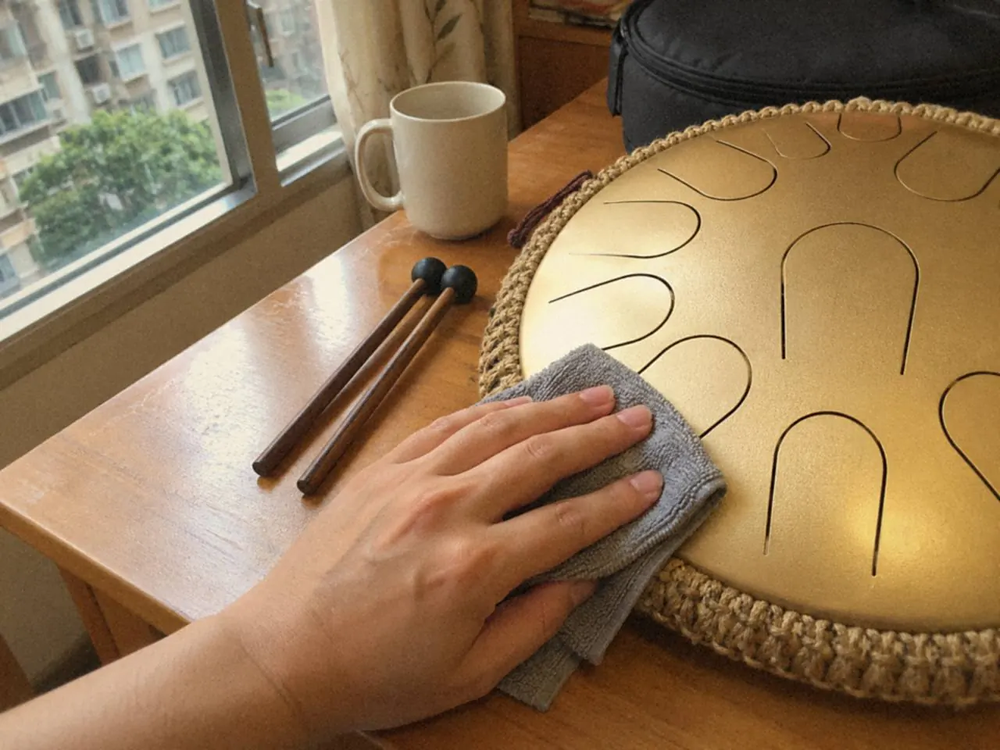
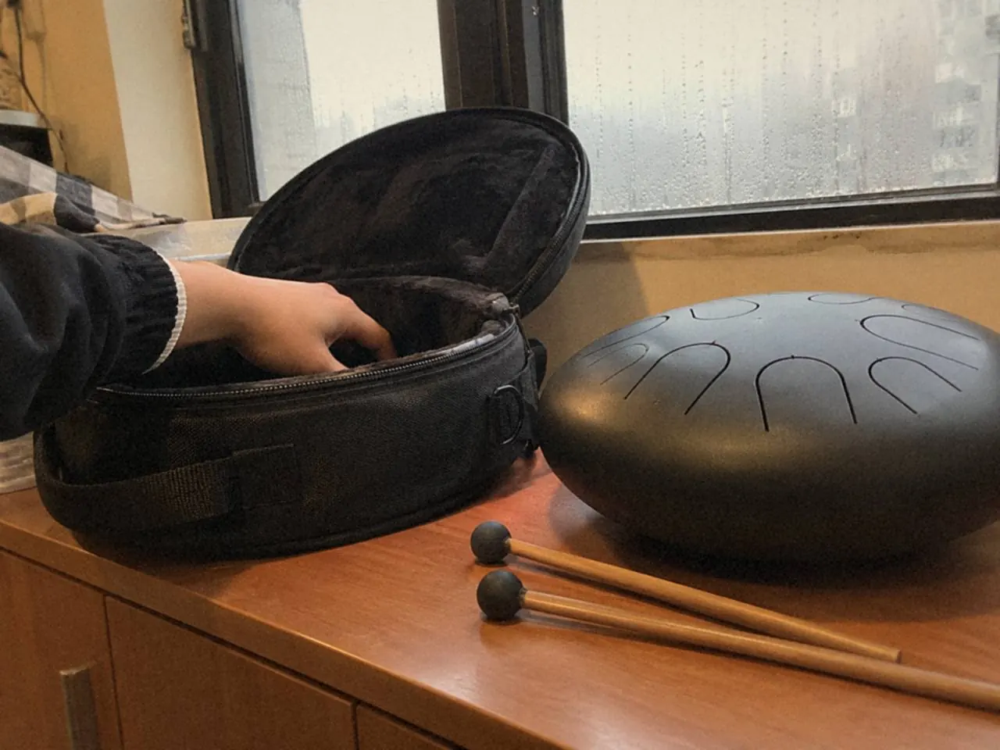

空靈鼓的保養，日常只有三件事：用乾淨軟布輕抹，收納前保持乾爽，移動時穩穩托住鼓身。不要扳動音舌，也不要自行調音。其他清潔細節，以製作者的材料與塗層說明為準。

金屬表面和音舌處理不當，會影響音色。保養看似小事，卻每天都碰到手感和聲音，所以先看自己平日怎樣收拾，再判斷日常保養有沒有風險。
怎樣避免刮花？
每次敲完，用乾淨的軟布輕抹鼓面，再放入收納袋。

收納前看一眼鼓面、音舌縫隙和底部，有沒有外物。一顆留在縫裏的小東西，下次敲的時候可能變成雜響，放進袋裏也可能磨到表面。
移動時穩穩托住鼓身，不要以音舌作握持的位置。放下時先確認表面平穩，碰撞和不當施力都可能影響聲音。
其他金屬樂器的處理方式，不要直接套用。不同鼓的材料與塗層不同，手上有製作者的說明，就跟着它做。沒有說明的話，乾淨軟布輕抹已經是最穩妥的做法。
香港潮濕，鼓放在哪裏？
選乾爽、溫度穩定的地方，避開高熱和長期潮濕。
收納袋也要乾燥。鼓抹乾了，放進一個潮濕的袋裏，等於沒有抹。袋子久沒打開，就拿出來看一看。

窗邊曝曬的位置、會發熱的電器旁邊，都不適合長放。回南天時，鼓也不要長期放在濕氣重的角落，每次收納前再抹乾一次。
動作要簡單到每次都會做。次序固定下來，收鼓很快便成習慣。
音舌可以自己調嗎？
不可以。不要扳動音舌，不要往縫隙塞入硬物，也不要自行調音或磨擦音舌。日常保持清潔和合適收納，比這些動作可靠得多。
聲音反應變慢，或者聽到異常雜響，先不要動手修。依次這樣查：
- 把鼓換到平穩的表面再試一次，排除桌面或配件共振。
- 看擺放和外物接觸，鼓面、音舌縫隙和底部有沒有東西碰着。
- 兩項都排除了，雜響仍在，再尋求維修協助。
不肯定是否需要維修，可以把情況告訴老師。課堂也會先看鼓的狀態，分清問題來自收納習慣還是日常使用。
常見問題
空靈鼓可以用水或清潔劑洗嗎？
以製作者的說明為準。日常用乾淨軟布輕抹並保持乾爽，就是基本做法。
空靈鼓走音了可以自己調嗎？
不要自行調音，也不要扳動音舌。先把鼓換到平穩表面再聽一次，仍有問題便尋求維修協助。
敲的時候有雜音，一定是鼓壞了嗎？
未必。桌面、配件或外物都可能引起共振或雜響，先排除這些，再判斷是否要檢查樂器。
這次收鼓之前，翻過來看一次底部和音舌縫隙，再摸一摸收納袋是否乾爽。鼓架和桌面支架見空靈鼓配件；想請老師看看鼓的狀態，可以經空靈鼓課程查詢。